graphical_model_assessment.Rmd
set.seed(0)
## regressors
d <- data.frame(
x = runif(500, -1, 1),
z = runif(500, -1, 1)
)
## parameters
d <- transform(d,
lambda = exp(1 + 0.5 * x),
theta = 2,
mu = 50 + 22 * x,
sigma = 22,
sigmaz = exp(3 + 1 * z)
)
## responses
d <- transform(d,
ynorm = rnorm(500, mean = mu, sd = sigma),
yhnorm = rnorm(500, mean = mu, sd = sigmaz),
ytnorm = crch::rtnorm(500, mean = mu, sd = sigma, left = 0),
ycnorm = crch::rcnorm(500, mean = mu, sd = sigma, left = 0, right = 100),
yt = mu + sigma * rt(500, df = 4),
ylaplace = mu + rmutil::rlaplace(500, s = sigma),
yrskew = sn::rsn(500, xi = mu, omega = sigma, alpha = 5, tau = 0),
ylskew = sn::rsn(500, xi = mu, omega = sigma, alpha = -5, tau = 0),
yunif = mu + sigma * runif(500, min = -1, max = 1),
ypois = rpois(500, lambda = lambda),
ynegbin = rnbinom(500, mu = lambda, size = theta),
yzip = ifelse(runif(500) < 0.25, 0, rpois(500, lambda = lambda))
)
## not accounting for heteroscedasticity
m2 <- lm(yhnorm ~ x, data = d)
### accounting for heteroscedasticity
m3 <- crch(yhnorm ~ x | z, data = d)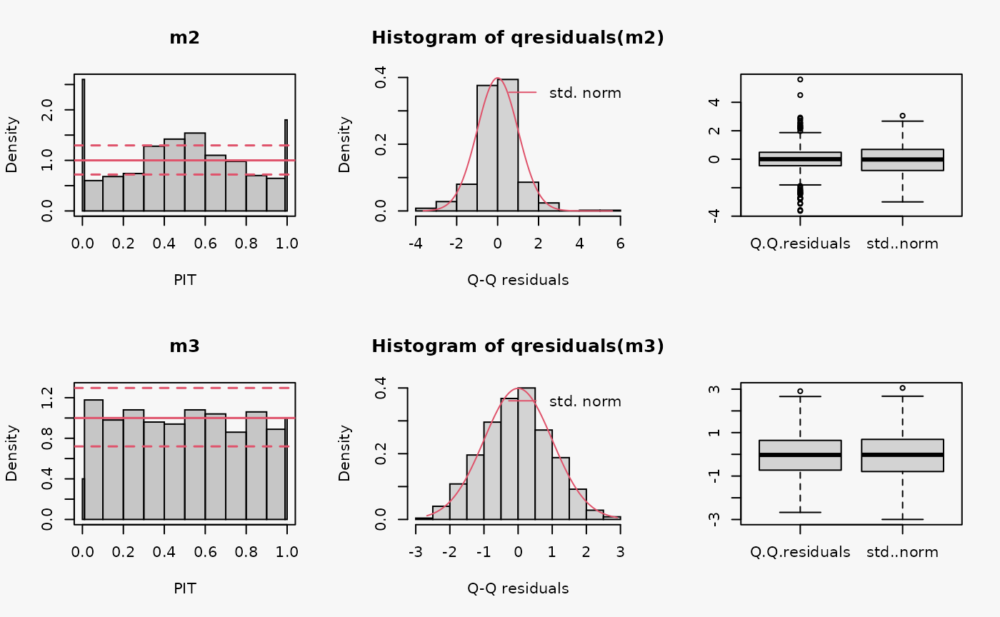
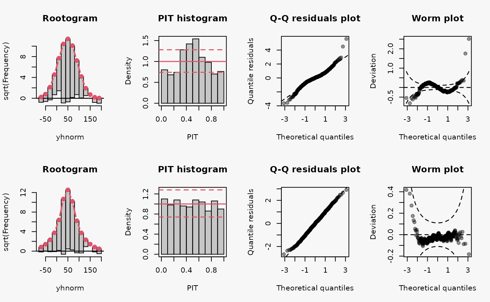
## not accounting for censoring
m4 <- lm(ycnorm ~ x, data = d)
## accounting for censoring
m5 <- crch(ycnorm ~ x | 1, data = d, left = 0, right = 100)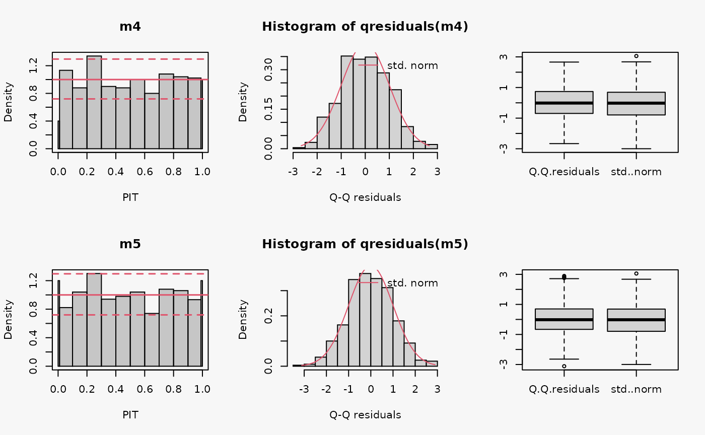
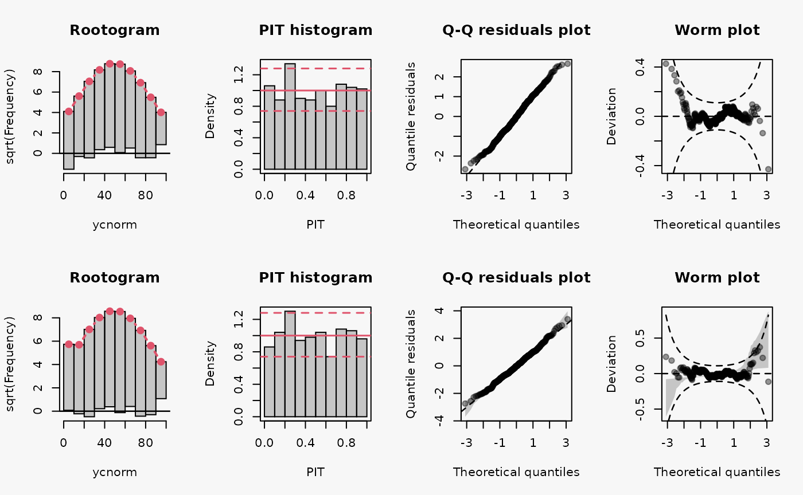
## not accounting for truncation
m6 <- lm(ytnorm ~ x, data = d)
# not accounting for truncation
m7 <- trch(ytnorm ~ x | 1, data = d, left = 0)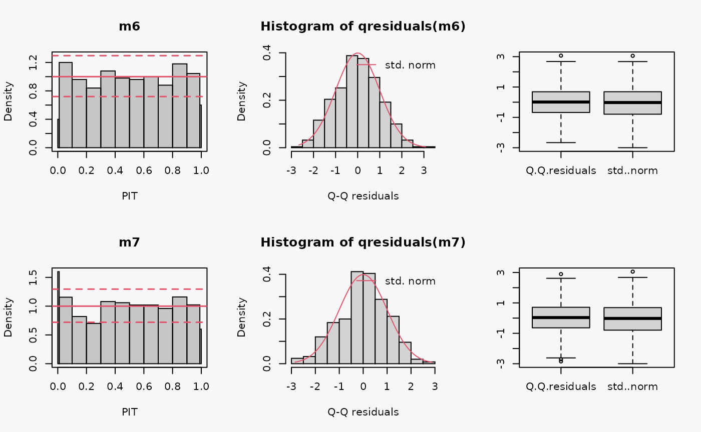
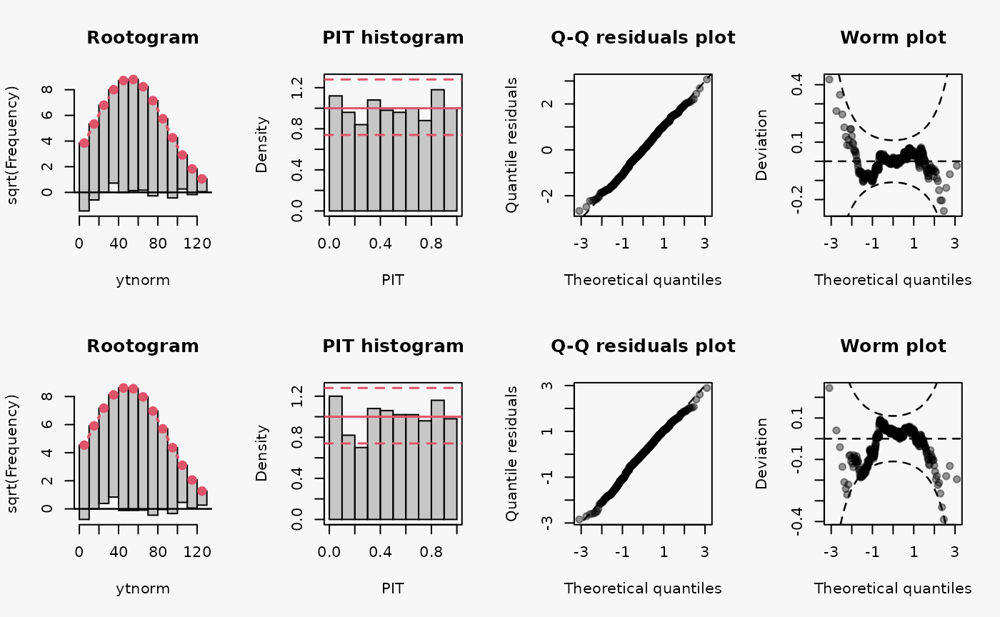
## not accounting for heavy tails
m8 <- lm(yt ~ x, data = d)
## accounting for heavy tails
m9 <- crch(yt ~ x | 1, data = d, dist = "student")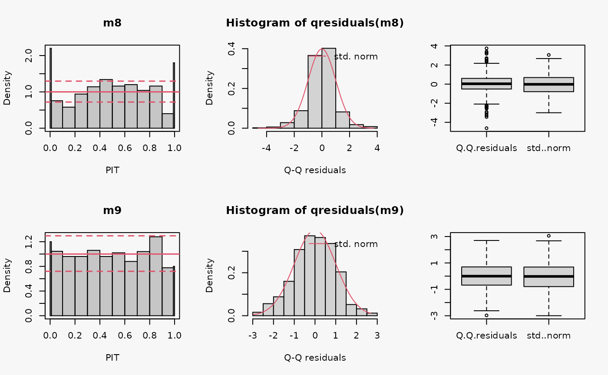
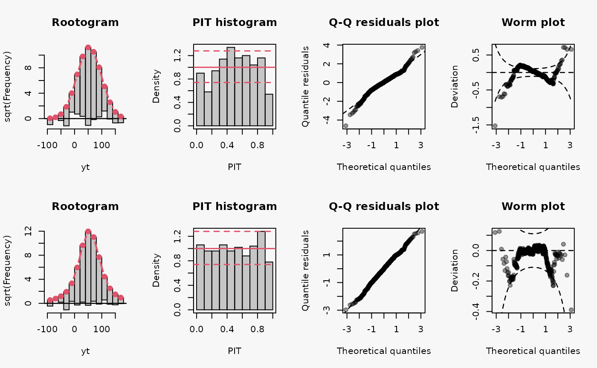
## not accounting for right skewed residuals
m10 <- lm(yrskew ~ x, data = d)
## not accounting for left skewed residuals
m11 <- lm(ylskew ~ x, data = d)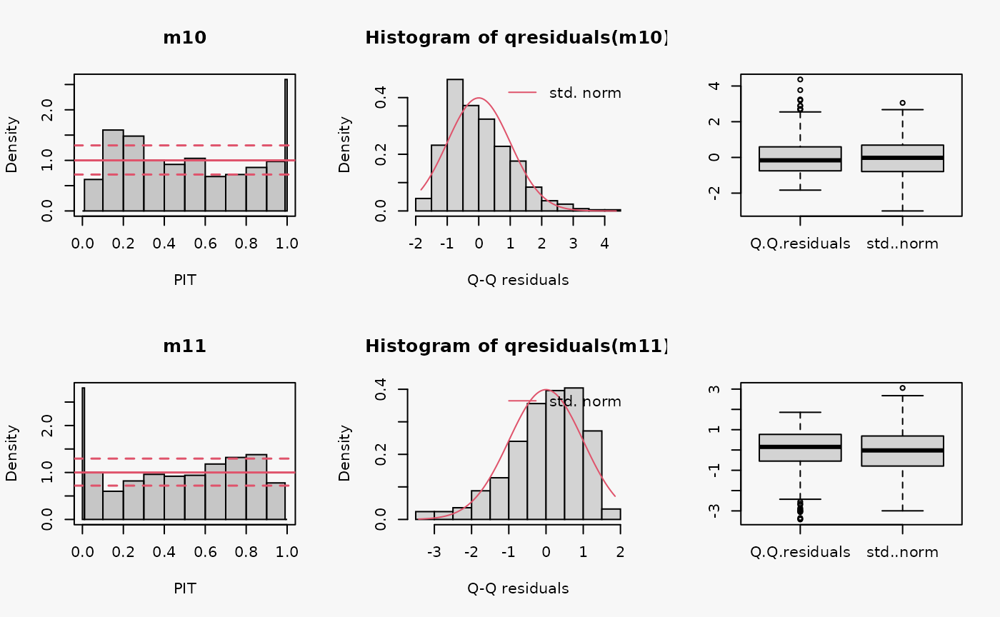
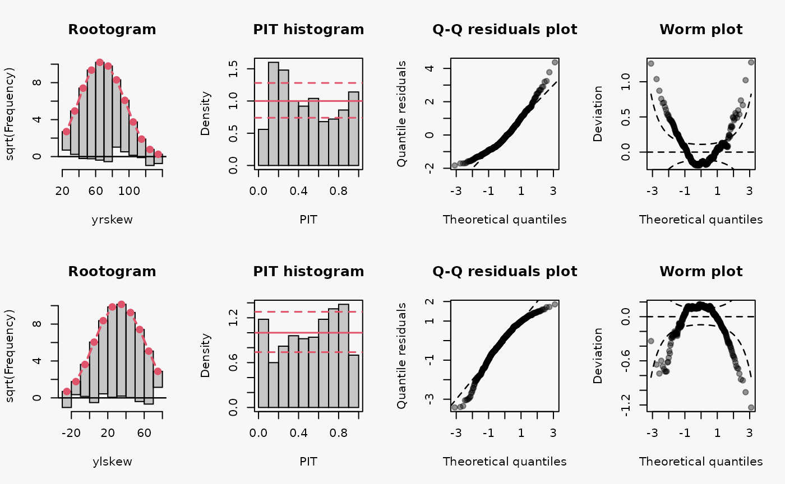
Other misspecified distribution: uniform, laplace
## misspecified distribution leading to an underdispersed predictive distribution
m12 <- lm(yunif ~ x, data = d)
## misspecified distribution leading to an overdispersed predictive distribution
m13 <- lm(ylaplace ~ x, data = d)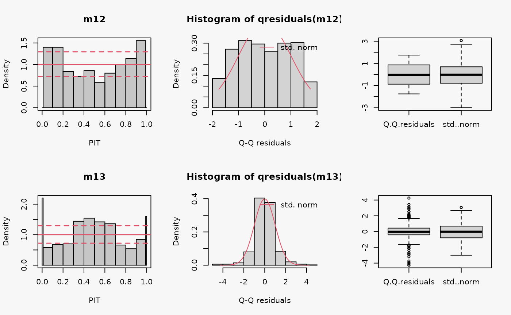
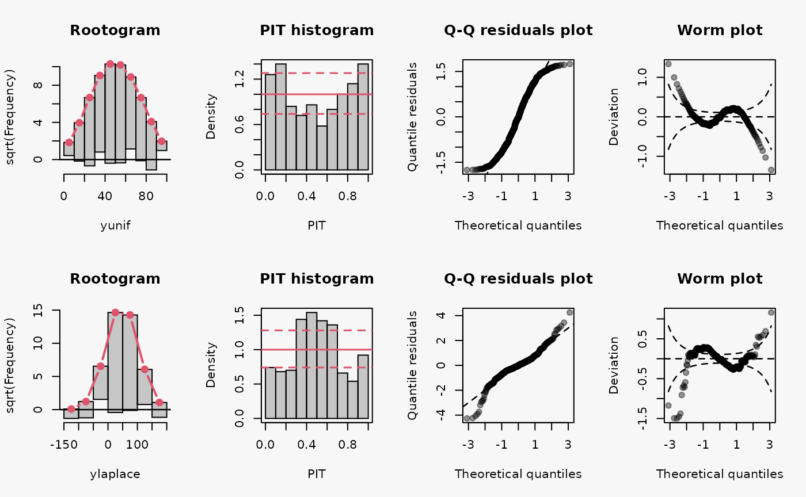